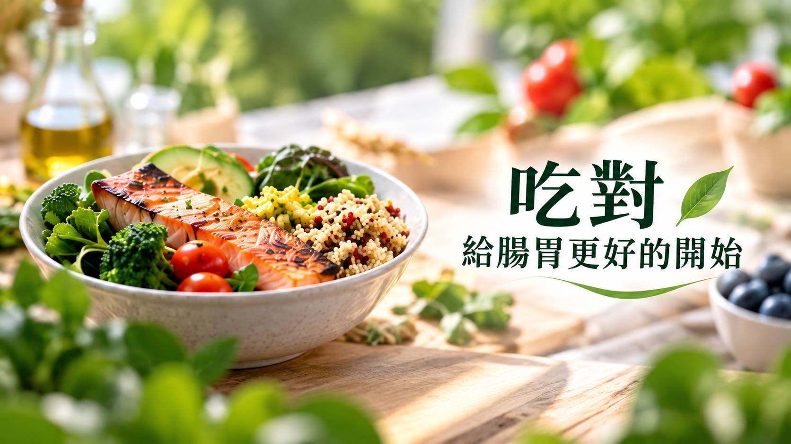
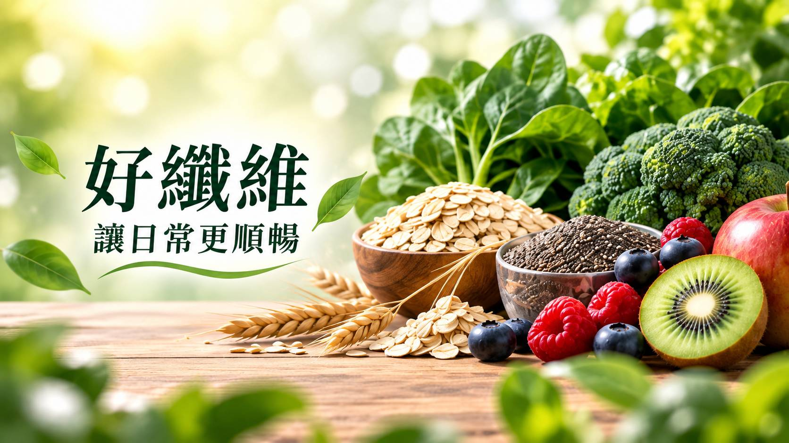

💡 外食、久坐、飲食不規律成為日常，從腸胃道運作認識消化與排便，掌握膳食纖維、酵素與植物植萃的保健應用。
現代人的一天，常常從「趕」開始。
早餐匆匆解決、中午外食、下午咖啡或手搖飲，晚上再來一場聚餐；吃得精緻，活動量卻越來越少。
當生活型態改變，許多人開始關注餐後負擔、消化、排便規律與腸胃道健康。也因此，「腸胃保健」早已不只是熟齡族群關注的議題，而逐漸延伸至外食族、上班族、久坐族與生活忙碌族群。
但想維持腸胃道健康，不能只靠一顆保健食品。
真正應該先理解的是：食物進入身體後，到底經歷了什麼？
01｜食物吃下去之後，腸胃道正在做什麼？
人體的消化是一套相當精密的系統。
食物從口腔開始，經過咀嚼、吞嚥後進入胃，再進入小腸與大腸。在這個過程中，人體會透過不同的消化液與消化酵素，將食物中的醣類、蛋白質與脂質逐步分解，使其中的營養成分更利於後續吸收與利用。而未被消化吸收的內容物，則會繼續進入大腸。
「消化」、「吸收」、「腸道蠕動」與「排便」其實是不同的生理環節。
這也是為什麼談腸胃保健時，不能把所有問題都簡化成一句：「排得出來就是代謝好。」從營養學角度來說，「代謝」是更廣泛的生理概念；排便並不等於代謝，也不能把兩者直接畫上等號。這個觀念對消費者衛教很重要，對品牌開發產品更重要。

02｜為什麼現代人容易感覺「卡卡的」？
生活型態往往才是第一個需要檢視的地方。
長時間久坐、飲水不足、蔬果與全穀攝取不足、飲食過於精緻、用餐時間不規律，以及活動量不足，都可能影響日常的腸胃感受與排便習慣。
因此，想建立順暢的日常節奏，可以先從四件事情開始：
足夠水分 × 多元膳食纖維 × 規律活動 × 穩定生活作息
尤其膳食纖維，可以從蔬菜、水果、全穀類、豆類、堅果與種子等天然食物獲得。比起每天只吃同一種蔬菜，更建議增加植物性食物的多樣性。

03｜酵素是什麼？與「消化」有什麼關係？
酵素（Enzyme）是一類具有催化作用的物質，其中許多為蛋白質。
人體本身就存在不同種類的消化酵素，參與營養素的消化過程。例如，不同酵素會針對醣類、蛋白質或脂質等不同受質發揮作用。
因此談到食品中的「酵素」，不能只看：「用了幾十種水果？」
真正進入產品開發階段，更值得確認的是：
原料來源 → 發酵／製程 → 酵素種類 → 活性規格 → 建議使用量 → 安定性 → 最終劑型
這也是專業機能食品配方與單純「堆原料」之間很大的差異。
04｜蔬果酵素＝吃蔬果嗎？綠茶植萃為什麼常出現？
不完全相同。保健食品不能取代正常飲食。
天然蔬果本身可以提供維生素、礦物質、膳食纖維與各種植物來源成分；而市售「蔬果酵素」產品，則可能涉及不同的原料組成、發酵方式、加工製程與規格。補充蔬果酵素產品，並不代表就可以不用吃蔬菜水果。
綠茶植萃：高認知度與茶文化延伸
除了酵素之外，植物植萃也是目前機能食品開發的重要方向。
其中綠茶（Camellia sinensis）本身就含有多種天然植物成分，包括茶多酚（Tea Polyphenols）。兒茶素（Catechins）是茶多酚中受到廣泛研究的一類成分，其中大家經常看到的 EGCG，就是綠茶中的代表性兒茶素之一。
也因此，從產品開發角度來看，綠茶植萃具有「高消費者認知 × 植物來源 × 茶文化 × 配方延伸性」等特色。但在實際產品設計時，仍需依原料規格、添加量、劑型及產品定位進行整體評估，而不能只因為市場認知度高就直接加入配方。
05｜從綠茶到茶花：「雙茶植萃」如何形成產品故事？
這支影片裡最有市場辨識度的地方，反而不是「酵素」三個字，而是：綠茶 × 茶花
同樣從茶文化延伸，但分別從不同植物素材切入，再結合蔬果來源酵素素材，就能形成：
雙茶植萃 × 蔬果酵素
這種產品開發方式，比單純把十幾、二十種熱門原料全部塞進配方，更容易建立清楚的消費者記憶。因為現在好的保健食品配方，不只需要回答「裡面有什麼？」，還要回答「為什麼這些原料要放在一起？」，這就是配方的「故事邏輯」。
06｜腸胃道保健，真正要做好這5件事
不論最後有沒有使用保健食品，腸胃健康仍應回到生活：
- 第一，攝取多樣化天然食物。
增加蔬菜、水果、豆類與全穀來源，而不是只依賴精緻加工食品。 - 第二，重視膳食纖維。
不同植物提供不同種類的膳食纖維，建立多元飲食比只追求單一「超級食物」更實際。 - 第三，記得喝水。
增加纖維攝取時，也應留意日常水分。 - 第四，避免長時間久坐。
依個人狀況安排規律活動，餐後也可以適度走動。 - 第五，建立規律生活。
飲食、活動與睡眠是彼此連動的，不能只處理其中一項。
※ 如果持續出現腹痛、明顯腹脹、血便、黑便、排便習慣突然改變、不明原因體重下降等異常狀況，就不應只靠保健食品處理，應尋求醫療專業人員評估。
🤝 從衛教走向商品：腸胃保健食品下一步怎麼開發？
對品牌主而言，這才是這篇文章最後真正要帶出的重點。
「腸胃保健」市場已經相當成熟。如果新品仍然只是「益生菌＋酵素＋膳食纖維」然後告訴消費者「幫助順暢」，市場差異化會越來越困難。新品開發應該先從 TA 與消費情境開始。例如：
久坐上班族 ➔ 日常飲食與生活管理
蔬果攝取不足 ➔ 膳食纖維植物來源
熟齡族群 ➔ 日常營養＋生活型態
市場定位 → 核心素材 → 複方邏輯 → 原料規格 → 劑型 → 打樣 → 成本 → 量產 → 上市
這樣開發出來的產品，才不會只剩下一張長長的成分表。從影片中的「雙茶植萃 × 蔬果酵素」，可以延伸的不只是一顆錠劑。依照品牌TA與通路策略，還能進一步思考不同的機能食品開發方向。
不是先找一堆原料，而是先找出產品存在的理由。
想開發自有品牌腸胃保健食品？歡迎與百達醫企業洽詢 OEM／ODM 保健食品代工與客製配方開發。
BKE 百達醫企業 | OEM / ODM 一站式保健食品代工